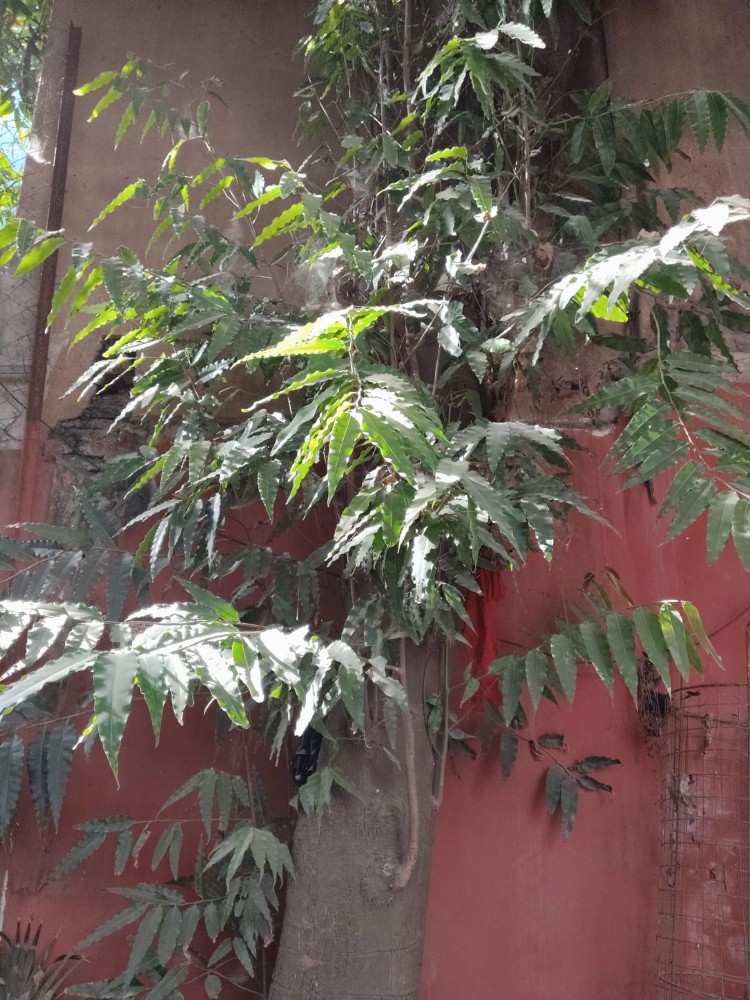

TERAPANTH JAIN VIDHYALAYA MATRICULATION HIGHER SECONDARY SCHOOL - SOWCARPET - CHENNAI - 01

COMMON NAME:
Ashoka Tree
BOTANICAL NAME:
Saraca asoca
FAMILY:
Fabaceae
SIZE:
Small to medium-sized evergreen tree, typically reaching 7–10 meters (23–33 feet) in height.
MEDICINAL PROPERTIES:
- The bark of the Ashoka tree is beneficial for the skin and is used in cosmetics to help improve complexion.
- Ashoka powder helps in managing problems related to menstruation, such as irregular periods, stomach pain, and cramps.
SPECIAL USES:
- Revered for its ornamental value and cultural significance.
- Appreciated for its graceful form, fragrant flowers, and historical importance.
Ashoka Tree – "THE BLOSSOMS OF HOPE"
It is believed that Gautama Siddhartha, the founder of Buddhism, was born under the Ashoka tree.
In Hinduism, the Ashoka is considered a sacred tree.